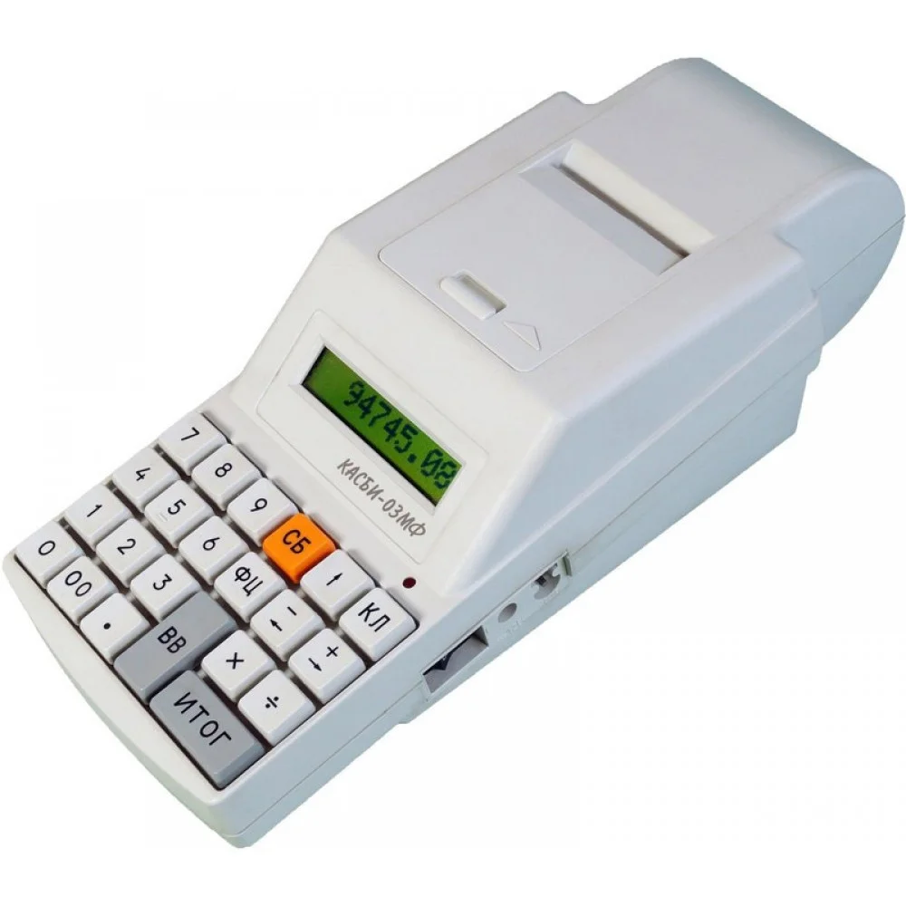

Кассовый аппарат Касби-03МФ (289,00 руб.)
Касби-03МФ - современные, удобные в использовании и надежные модели ККМ. Они разработаны на базе самых передовых технологий. Выполнены на высоком уровне качества. Кассовые аппараты «Касби-03МФ» обладают функциональными возможностями, отвечающими всем требованиям объектов торговли и сферы услуг (как в стационарных условиях, так и при выездной торговле).
Основные характеристики:
- Масса:1.3 кг.
- Потребляемая мощность: 1.5 Вт.
- Количество товарных групп: (отделов) 16
- Количество кассиров: 8
- Количество программируемых цен: 30000
- Программирование клише в начале чека: 10 строк по 26 знаков
- Программирование клише в конце чека: 5 строк по 26 знаков
- Работа с СКНО: поддерживает
Кассовый аппарат Касби. Основные функциональные возможности :
- -Автономная работа не менее 24 часов без подзарядки, от сети 220 В или от автомобильного аккумулятора без дополнительных устройств.
- -Диалоговый режим меню позволяет легко и быстро выбирать необходимый режим работы ККМ, всегда подскажет пользователю последовательность действий.
- -Сохраняет работоспособность при низких температурах (до -30ºС).
- -Характеризуется низкой потребляемой мощностью (до 1 Вт) и бесшумной работой.
- -Печать следующих видов отчетов: несколько видов Х-отчетов (без гашений), ежедневного Z-отчета (с гашением), фискальных (за любой период эксплуатации, полных и сокращенных).
- -Интерфейс для подключения сканера штрих-кодов, выносного индикатора покупателя, электронных весов.
- -Возможность работы с внутренней базой товаров.
- -Матричный жидкокристаллический, отображающий буквенно-цифровую и символьную информацию индикатор.
- -Кассовый аппарат имеет возможность работы с СКНО.